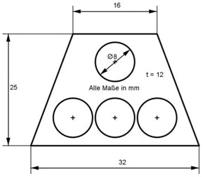

Aufgabe 43 Berechnen Sie die Masse m des Körpers mit einer Dichte ρ von 2,7 kg/dm3.

V = Trapezprisma - 4 * Zylinder d = 8 mm --> r = d/2 = 8 mm/2 = 4 mm a + b V = ------- * hTrapez * t - 4 * п * r2 * t 2 32 mm + 16 mm V = ---------------- * 25 mm * 12 mm - 2 - 4 * п * 42 mm2 * 12 mm V = 7 200 mm3 - 2 411,5 mm3 = 4 788,5 mm3 = 4,79 cm3 ρ = 2,7 kg/m3 = 2,7 g7cm3 m = V * ρ m = 4,79 cm3 * 2,7 g/cm3 = 12,93 g